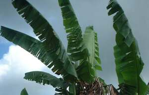

dewun 
/dɔun/
n.
“leaf”
1.
n.
leaf
Ka seini ne lalag iyan sika se parti te pinamula ne egpanggimu te egkakeen te pinamula, seini iya ka egkakita ne meilem wey due degma malalab, makalawag, wey maangkag ne batek kayi.
Meupiya ne ig-atep te leeb ka dewun te abaka su malurung ne egtengtengan.
The leaf of the banana is good for roofing for is smooth.
Wrd.Gloss: leaf
Eng. leaf
Tag. dáhon
Ceb. dáhon
Ilo.: bulóng
Binukid: dahun
Kinamigin: dahun
WBM: dahun
Cagayano: daun
Cotabato Manobo: daun
Tasaday: daun
Tagbawa: daʔun
Obo: daʔun
Tigwanon: deun
Sarangani: dawen
Ilianen: dawun
Dibabawon: dehun
Proto: dahun
OCM: Ethnogeography (823)
DDP: Parts of a plant (1.5.5)
Online dict status: -
Usage level: B
v.
for plants (egderewun, migderewun/inderewun, derewun, theme, eg><ø-rdpCV-) to produce leaves
Data Qual: check this
Eng. leaves, to produce; produce leaves
Online dict status: c
Usage level: B
2.
n.
a share for food
Eng. share
Online dict status: -
Usage level: M
Updated by: RJH,AAA,TME,QDL,RAA,NJK
Last updated: 30/Jul/2011
"dewun" in text "Cooking in Bamboo"
"dewun" in healthbook "Natibbas te ugpit ka paa ni Biltu"
"dewun" in healthbook "Natibbas te ugpit ka paa ni Biltu"
This page last updated: 19/May/2012
Copyright © 2009-2010, Matigsalug Language Christian Association, Inc